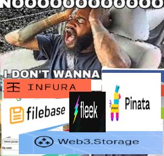

Broke Dumbass Attempts To Web3
published: 2022-07-07
I have successfully managed to microwave my brain. Spending forty-plus hours squeezed into a single month on a project you wanted to make for several years and then getting into it and finding out it's just tedious data entry all the way down will do that to you. Doing not much of anything else, writing or making art or even going outside, has made me go animalistic and crazy to the tune of an oral fixation of gnawing on chunks of wood stolen from the organics waste bin at the side of the house. Not the greatest idea I've ever had. Hopefully "start working on a new book of poetry" will be a better one once the mental fog starts to lift. I hope this isn't what remote work will feel like once I do get a job.
Speaking of excessive technology use driving people batshit insane, I had a dream last night where a bunch of techbros had forced me to stand in front of a tribunal and explain why Let's Decentralize doesn't cover web3 projects. Neither my argument nor theirs made any sense, being a dream and all, but I remember "your shit is obtuse and doesn't make any sense to a layperson" not being taken for an answer. But since at least two people have emailed me asking if I could shill their crypto projects and the only response I've pulled out so far is "I don't do free labor", I decided that I would spend today (yesterday, if you're reading this on the day of publication) actually researching web3 so I can have an actual concrete argument when the tribunal does come.
Filecoin
Filecoin was the first web3 project that came to mind. I mean, it has the name "file" in it! So one would think that the whole point would be to host files online. And what is a website other than a pile of files?
Since I was already familiar with IPFS, which Filecoin is apparently built off of, I thought that setting up a Filecoin node would be as simple as compiling and installing the IPFS node is. Apparently not. The main website felt janky and broken with a "loading experience" spinner than just spun forever, and the homepage displayed little to no relevant information other than a glorified version of "we store files", which one could already guess from the name. Going to "Build" and then "View Filecoin storage tutorials" gave an IPFS resolving error. Digging on an external search engine turned up the GitHub for the Lotus daemon, which allows one to interact with the Filecoin blockchain, but the "getting started" documentation at the end of the page also 404ed with an IPFS error. Because what you truly want to see when researching if a new technology is trustworthy or not is to see it crashing and burning at every turn.
Strangely, a different link to the documentation was on the sidebar. "Surely we're getting somewhere," I wondered. "Not even figuring out IPNS took this long."
If the destination was "imagining myself slamming my fists into my keyboard", then sure, we got somewhere.
The Lotus daemon has absolutely ridiculous hardware requirements: it would cost more to acquire 128 GB of RAM and the energy to power that than I'd ever earn with Filecoin, assuming I was ever in it to earn anything and didn't just want another mirror for my website. Lite nodes are slightly better, but still way higher than anything I have: my VPS has only 8 GB, and my desktop has 16, and there's no way I'm running a bandwidth-intensive application like this from my home connection or paying more for a beefy VPS from Contabo when it would all just get sucked up by a single application. Besides, it wouldn't even work for long: the chain grows at approximately 38 GB every day. With the storage my current VPS has, I'd be out of disk space in four days!
What seems to be common for web3 projects is that, if one doesn't want to run a node or doesn't have the resources to do so, the only way to interact with the network is by interfacing with a third-party API, which kind of defeats the point of "decentralization" if my only method of access is forever mediated by someone else.
So Filecoin is out.
Siacoin / Skynet
I did not go in with high hopes. My first introduction to Siacoin and its associated projects was a huge callout post warning about how shoddy and, as we zoomers say, "sus" the development team is. I strongly urge anyone considering going into web3 to read through that post, even if not going to Siacoin per se, since many of the arguments about monetization and faux-decentralization will carry over into anything web3-related.
Despite this, I was still willing to give Skynet a try. I mean, it bills itself as "a collection of cryptographic protocols for storing and retrieving data over the Internet." What is a website if not a collection of retrievable files over the Internet? Nothing in that definition explicitly excludes websites, even if web3 seems to be mainly comprised of a bunch of shoddy Node.js webapps.
This time, mainly due to the influence of the callout post, I went on a little tour of the community first before getting into the documentation. I wanted to test the waters, to see the typical userbase of Skynet, to judge the competence of those who I would be trusting with my data. After all, web3 has quite the reputation for scams and money laundering and general financial incompetence. Given that I am currently unemployed and dependent on the goodwill of my parents to have a roof over my head and food in my stomach, I don't exactly have the "disposable" income to be burning it for the purposes of playing with "magical Internet money".
I should have expected less than nothing.
One of the example apps is clearly written by competent developers I can trust with my private files. "Always make soure, you're logged in!" Yeah, I'll make "soure"... to stay away from cloud storage that's effectively a black box concerning where my sensitive data goes.
One of the top posts in the subreddit is a "meme" about a USB stick that uses Siacoin for umlimited storage. The "meme" (in quotes because the only humor value is in how half-baked the ideas within are) claims it would require "no installing" and "no need to understand crypto". Only about one or two commenters stopped sucking the OP off for long enough to realize that such a device would require a persistent Internet connection and enough crypto knowledge to get a Sia wallet set up to actually buy whatever storage space ends up getting used and also for drivers to be preinstalled on every operating system in existence in order to require no installation of additional software and to appear just like any other flash drive.
The rest of the subreddit is just the standard crypto whining about Binance/Coinbase trading and praising the main devs for the "new Internet" they have supposedly created.
So what if I want to actually access and host content on Skynet? You know, the reason we're here?
With IPFS, I just have a node on my computer running on localhost port 8082 (yours may differ) that exposes a web UI I can use to view and download content. My website is set up to use DNSLink, so you can just throw the regular domain into any IPFS portal, whether local or hosted by someone else. For people without domains, they can still use IPNS (which allows for updating content at the same hash), just by distributing the hash itself instead of linking it to a domain name. All of this can be done from a computer I already own that is powerful enough to run an IPFS node, which I've been able to successfully do from a toaster with 2 GB of RAM and a 100 GB hard drive shared among the whole operating system, far lower than the requirements for a Skynet portal.
Skynet also has portals, which allow for free viewing of content... but unlike IPFS, where I can just run ipfs add -r /path/to/content and get a hash I can then throw into ipfs name publish MYEXTREMELYLONGHASHHERE, the design of Siacoin mandates that one pays for the storage space one uses. Prices are set by each individual portal, but portals often offer an extremely restricted free tier, which just throws those without money back into the sharecropping paradigm. And if a portal goes down, both free and paid users lose control of all their data on said portal. One could run their own portal to avoid shutdowns, but that costs money beyond
the initial expense of the hardware and bandwidth and electricity to get a server in the first place.
Oopsies, looks like you need money to participate after all!
And also you apparently need a LastPass account. A centralized proprietary service to set up a decentralized Internet? (No, a CLI client does not count.) Sia is clearly run by clowns.
Arweave
By this point I was ready for the post to be done. But still I persisted. Surely there must be something out there other than IPFS that won't demand access to my money?
Arweave seemed promising at first, but the second tab on their subreddit's header says "Get free tokens now", implying that tokens actually cost money. Under the tab next to it, "Technical", there is supposedly information about hosting content on the Arweave network, but it 404s.
After retrieving a saved copy of the deploy page from the Wayback Machine, I installed the NPM package used to deploy files... and failed, since the tool required a keyfile and, for whatever reason, that command wasn't listed first. After generating said keyfile, I tried again... and got an error about insufficient balance. As expected. But hey, at least I tried. And didn't have to buy a supercomputer to do so.
sudo npm uninstall -g arweave-deploy, and into the trash bin it goes.

If the whole point of web3 is to decentralize everything, then I don't want to use third parties to host my website! I want to host my own stuff without needing a supercomputer or a persistent connection or static IP address!
As far as serverless hosting goes, we already have Freenet and the gazillion ZeroNet forks and whatever Beaker Browser is using nowadays and IPFS, the latter of which works just fine without the gazillion "blockchain domain" scams. In fact, since most of these web3 projects are built off IPFS anyway, why go through a middleman? Because these projects incentivize people to host your shit? If the content is popular enough, there doesn't need to be a profit motive for your content to stay alive and be well-propagated; it'll just happen naturally.
How are low-income and other disenfranchised people supposed to participate in web3 without just becoming sharecroppers all over again? With the profit motive, and since storage space is limited, nodes have an incentive to seed anything a wealthy person wants and give the leftover scraps of storage and bandwidth, if any are left, to the "free" users. If microtransactions are required to view anything, then how is a person with little to no "disposable" income supposed to discover new content they may like? (Of course, a counter-economy of non-commercial content sans paywalls may very well rise up in response.)
I say: let them. Let them lock down their works so tightly that they become utterly inaccessible. Let them miss out on the money they would have earned from now-disgruntled customers. Let the corporations destroy themselves in building a dam to maximize every dollar flowing to them only to find their river is drying up.
I wish that web3 evangelists would realize that the average layperson doesn't give a shit about decentralization in the computing sense. They don't care about making their files as accessible as possible, just to themselves. To them, Google Drive or OneDrive or whatever other cloud storage services are in vogue are plenty good enough for them. They would rather see ads and sharecrop on centralized social media platforms than open their wallets to pay for an inferior service. And of those with the technological expertise to operate one of these nodes if we really wanted to, well... I know that I wouldn't want to live in a world where every interaction with my fellow (physically) human beings is monetized. And I doubt that many others would either. If improving the Internet is the goal, especially on this increasingly fragile planet, replacing the current system with something functionally worse but multitudes more energy-intensive is not the solution.
CC BY-NC-SA 4.0 © Vane Vander